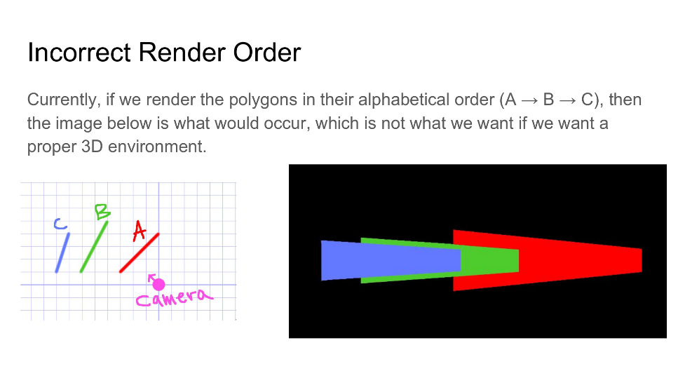
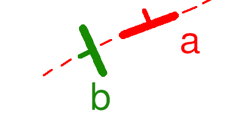

Demise
This was the final project for my Data Structures class, and it is probably my most technically impressive work.
You can view a short demonstration of it in this youtube video.
TLDR
I designed a doom-style 3d game engine and developed a small maze game to showcase it. It uses a binary space partition to handle the rendering order.
How it works
Projection
The first part of how it works is extremely simple. It uses Perspective Projection to project points in 3d space onto the screen.
The x, y, and z depths are calculated from a camera frame which defines a coordinate system relative to the camera's looking direction. From here we take those relative x and y coordinates, and divide them by z. This results in vertices that are farther away showing up closer to the center screen. This happens at a linear scale, so objects that are twice as far away end up half the size. This is a true fact of vision which is truly fascinating.
This formula allows us to project a single point onto a screen, so to draw polygons in 3d we simply project many of these points and fill the space in between. In my case, this was done with solid colors, but it can be done with textures as well.
The cool part about this is that it runs extremely fast, since the calculations are just a bunch of vector dot products, which are just multiplication and addition. This is in stark contrast to the previous 3d engine I had made, Pepperoni Slayer which used a naive approach with lots of trigonometric operations.
Rendering Order
Perspective projection is great and all, but when you have multiple polygons to draw, you may run into the problem that things are being drawn on top of eachother in the wrong order. This is not an accurate representation of reality and can make you sick if you are inside of the simulation for too long.

This is where we call upon the powers of the binary space partition.
The Binary Space Partition (BSP)
The binary space partition is a slightly outdated technique in computer
graphics. Nowadays we have massive graphics with more procesing units
than a windows xp computer from 10 years ago. These cards are able to do
a depth test for each pixel in realtime. But to understand binary space
partitioning, we have to go way back.
To 1993.
I wasn't even alive in 1993, but the Gaming community was. And the newest hottest game was DOOM. A full 3D first person shooter with level geometry that could be displayed at any height at non-right angles. It was truly one of the very first digital worlds.
In order to accomplish this feat, the developers at id software had to be very clever. They were at the forefront of this technology and couldn't rely on 'tried and true' techniques. Luckily they had 3d graphics legend John Carmack in their arsenal, who knew about a technique for front-to-back rendering using a BSP. Which they employed to great success.
Cool story, How does it work?
Excellent question. How the F*#% does this thing work? When I first read about the BSP, I was surprised to find out how little information their is about this on the internet. I had to scower different academic reports and piece together small snippets from various youtube videos.
From wikipedia : "In computer science, binary space partitioning (BSP) is a method for recursively subdividing a space into two convex sets by using hyperplanes as partitions."
In english, this means that we build a binary tree, where for each node in the tree, all nodes to one side of it are in front of that node, and all nodes to the other are behind it. Then drawing objects in the correct order becomes a trivial recursive algorithm:
Algorithm:
Step 1: Render all nodes behind current node
Step 2: Render the current node
Step 3: Render all nodes in front of current node
Thats it. I was absolutely dumbfounded with its simplicity the first time I implemented it.
The harder part is actually building this tree. Take for example this simple level. A and B are walls with arrows pointing towards their fronts.

Question for the reader: Is wall b in front of or behind a?
...
...
...
TIMES UP!
The answer is both!
This means that when picking one to build your BSP its guaranteed to not work from one of two sides to view it from.
To get around this, we have to split any walls up based on their imaginary intersection point with the front-back lines of other walls.
I toiled hard for many nights at this problem, trying to create my own BSP compiler. I came close but never came up with an incredibly reliable way to do it.
Eventually I got fed up and made a level that follows these rules by hand.